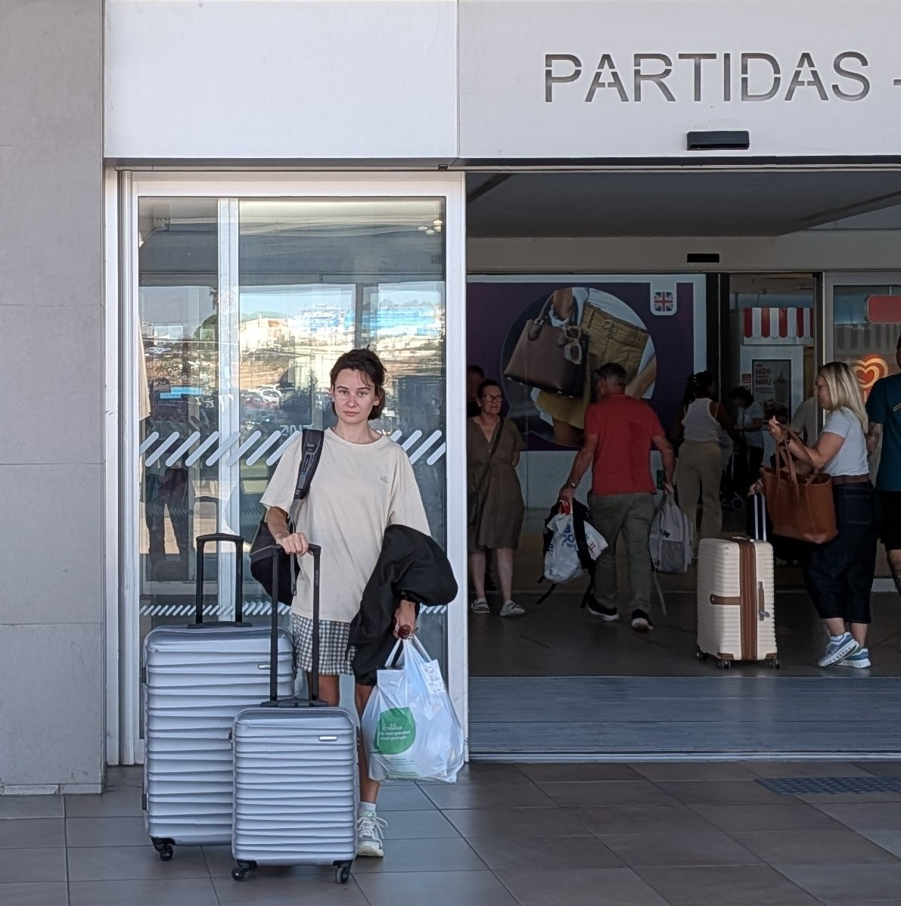

No, tak.
Ponieważ nie dostałam stypendium, ponieważ umowę finansową podpisują tylko ze studentami trzeciego roku.
Ano, nie. W zeszłym roku, zamiast wpisu warunkowego przypadkiem dostałam powtarzanie roku, więc oficjalnie po dwóch latach na pierwszym roku, teraz jestem na drugim.
Kiedy ostatnio sprawdzaliście, na którym roku jesteście? A nie dowiedziałam się przed wyjazdem, ponieważ umowę podpisywałam już po rozpoczęciu zajęć, korespondencyjnie.
Nie. Ok, tak, ale nie miałam wyboru. Moja koordynatorka była na urlopie przez połowę wakacji, a przed samym wyjazdem, nie było terminów w BWZ. Postanowiłam, więc dopełnić tę formalność na miejscu, bo już rozpoczynały się zajęcia w Portugalii.
Nie, naprawdę próbowałam.
Chciałabym. Dodatkowy problem: nie mogę się bronić po tym roku, bo jest to przywilej trzeciego roku.
Mogę, ale to nie zmienia faktu, że nie mogę mieć teraz seminarium, a bez niego, nie mogę się bronić.
Dziekanat też nie wiedział, że jestem na pierwszym roku. Normalnie chodziłam na wszystkie zajęcia drugiego roku, zdałam egzaminy i nikt nie miał nic przeciwko. Gdyby nie erasmus, pewnie nikt by się nie zorientował do końca trzeciego roku.
W tym roku będę chodzić na wszystkie zajęcia obowiązkowe trzeciego roku. W przyszłym chcę pojechać na erasmusa, zapisując się już tylko na ciekawe, dodatkowe przedmioty. I seminarium.
Było! Dzięki, że pytasz :)